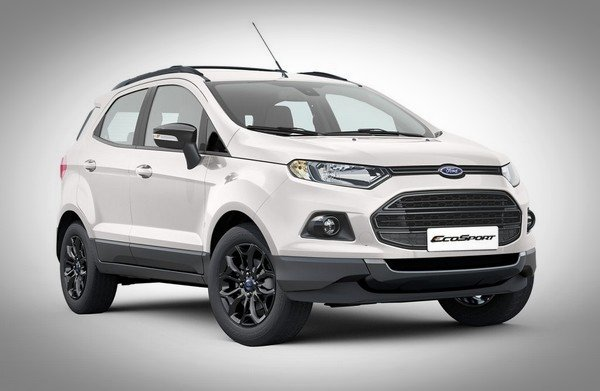
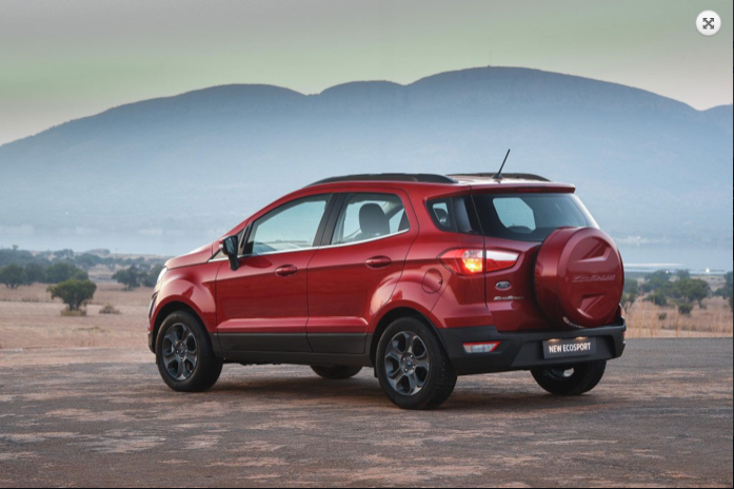
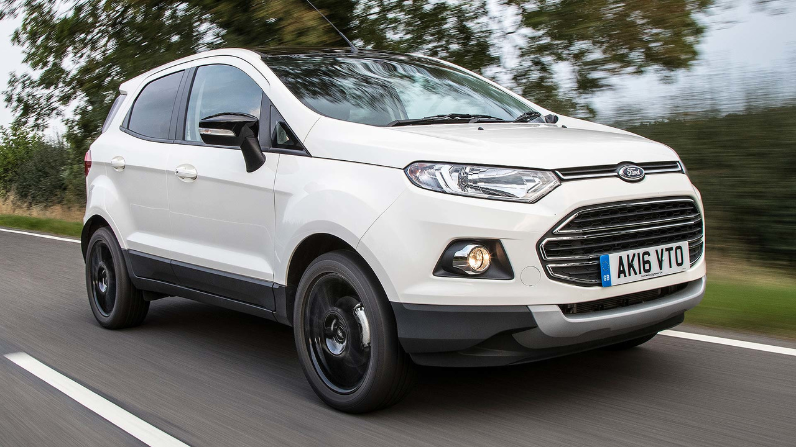
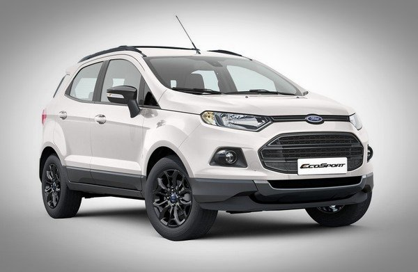
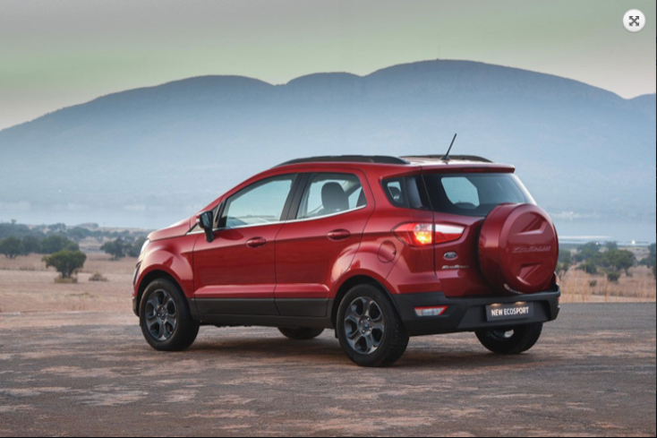
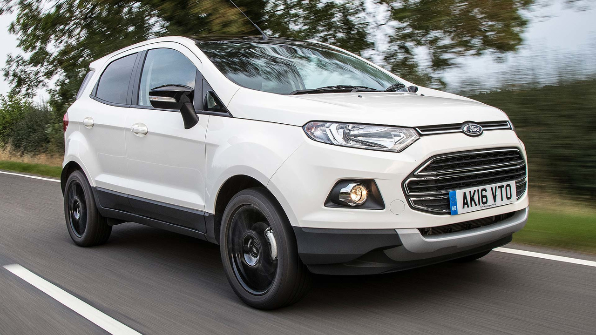

Price: R260 000
With a new year upon us, there’s no better time to invest in a new car to drive you towards your goals. The Ford EcoSport is just the SUV for the job – not only is it a clever and quality vehicle, but there is a price to suit every budget. Read on to discover which Ford EcoSport model variant is right for you
A new year begins a new personal journey for each of us. No matter where your roads may take you in 2020, a Ford EcoSport will ensure that you arrive there in safety and style. It’s an SUV made especially for the adventurers, the wanderers, amongst us – reliable and comfortable all the way.The Ford EcoSport will have no problems navigating the urban jungle and is just as fantastic when the roads get rougher. A host of value-adding features make every trip an enjoyable one, leaving you feeling that you just want to keep on driving. Make the journey as incredible as the destination in 2020 with a brand new Ford EcoSport